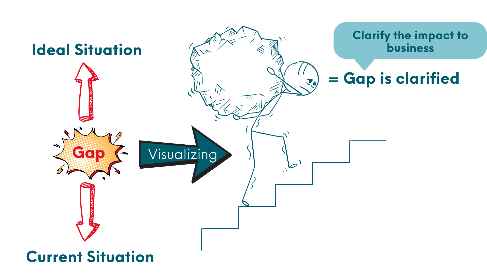

Step ①
How to Clarify the Problem?

How to Clarify the Problem?
What does "problem" mean?
Perodua defines a problem as:
“Gap between an Ideal Situation and
the Current Situation”.

Step 1: Clarify the Problem
① Clarify Ultimate Goal
State your goal.
What are you seeking to achieve?
② Clarify Ideal Situation
If everything is resolved, what is the ideal situation?
In contrast to the ideal situation, what is the current situation?
③ Clarify using facts
Clarify using facts through Genchi Genbutsu.
④ Visualize the problem
Visualize problem to make everyone understand.
⑤ Clarify the impact
Clarify impact to job performance, customer, & business organization.
Example of Clarifying the Problem
1 Billion RM in annual sales
Problem statement: Sales not achieved

Sales: 10 million RM
Sales: 7 million RM
Using facts thru GENCHI GENBUTSU
● Not meeting sales quota
● Customer long waiting time
● Profit/loss/bonus
3 million RM short in sales
Indicate by specific GAP
Step 1: Details of the Process and Key Points
Clarify the Ultimate Goal of one's responsibilities and work.
Clarify the Ideal Situation of
one’s work.

Clarify the Current Situation.
Visualize the gap and view the problem.
Clarify the impact to business.